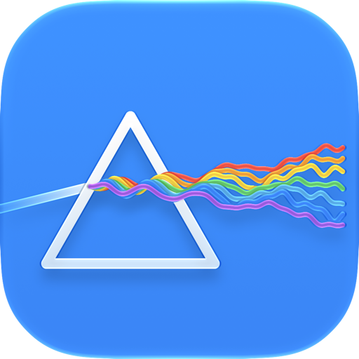
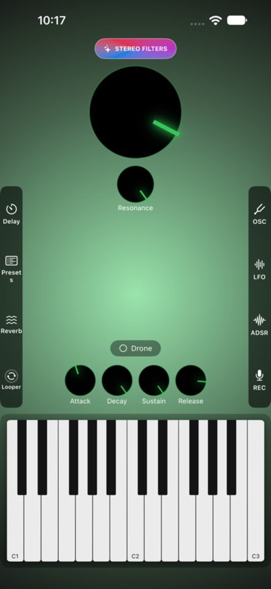
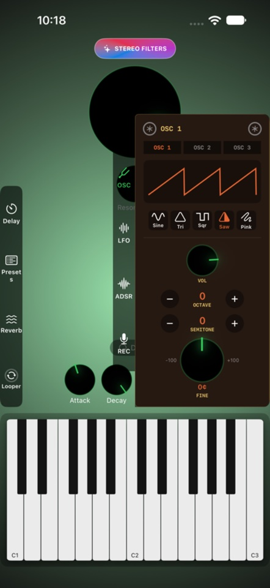
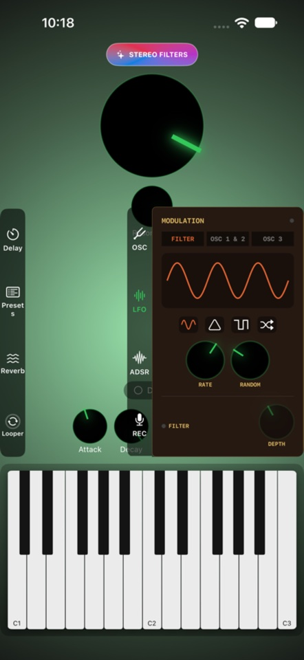
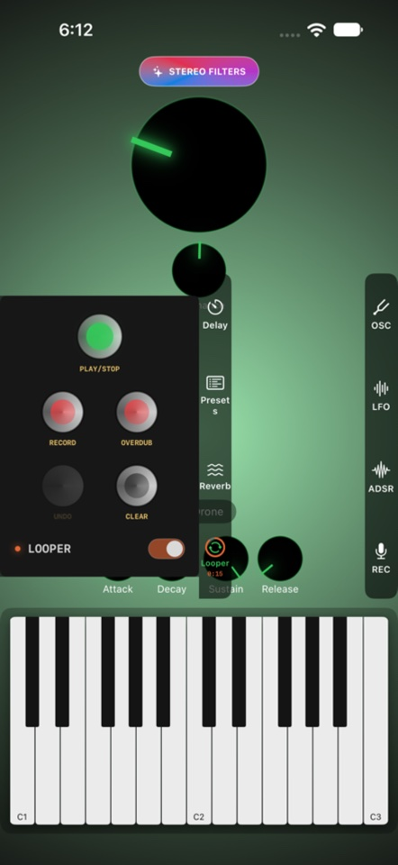
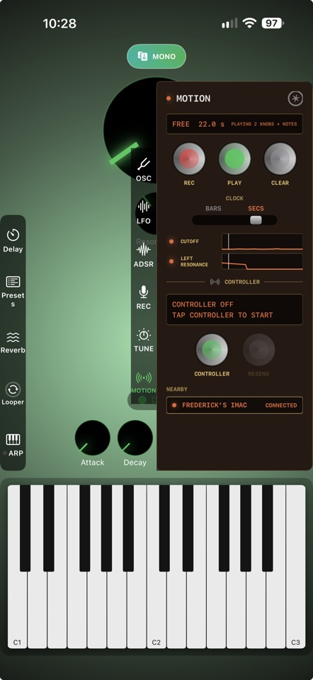
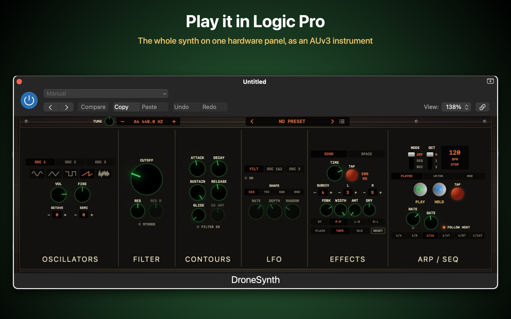

DroneSynth
A hands-on, analog-style synthesizer built for ambient textures, evolving pads, and hypnotic drones.
iPhone · iPad · Mac · Android — and a plugin for Logic Pro & GarageBand





Features
- 3 independent oscillators — sine, triangle, square, saw, and pink noise
- Full ADSR envelope and two independent LFOs modulating filter cutoff and pitch
- Moog Ladder filter with optional true stereo filtering (in-app purchase)
- Tempo-syncable delay with tap-tempo and ping-pong bouncing
- Reverb across four spaces — Room, Hall, Plate, and Cathedral
- Drone/sustain mode, on-screen keyboard, and unlimited saved presets
- MOTION — record your knob moves and notes as a loop, and use your iPhone or iPad as a wireless controller for the DroneSynth plugin in Logic Pro or GarageBand (one-time in-app purchase)
- Adaptive portrait and landscape layouts

A plugin for Logic Pro & GarageBand
On iPad and Mac, DroneSynth is also an Audio Unit (AUv3) instrument: add it to a track in Logic Pro, GarageBand or any AUv3 host, play it from your MIDI keyboard, and automate every knob.

How it works
DroneSynth is built around three oscillators feeding a shared filter and envelope, with two LFOs and a delay/reverb send for movement and space.
- OSC — pick a waveform (sine, triangle, square, saw, or pink noise) per oscillator and tune its volume, octave, semitone, and fine pitch.
- ADSR — shape how each note attacks, decays, sustains, and releases.
- LFO — two low-frequency oscillators modulate filter cutoff and pitch for evolving, animated textures.
- Delay & Reverb — tap out a tempo on the delay, bounce it ping-pong across the stereo field, then wash it through Room, Hall, Plate, or Cathedral reverb.
- Drone — toggle Drone mode to sustain a chord indefinitely without holding down keys, ideal for ambient beds and long-form textures.
- Keyboard — play from the on-screen keyboard, with adjustable range and octave for reaching exactly the register you want.
- Presets — save and recall as many patches as you like from the Presets panel.
- Stereo Filters — an optional one-time purchase that splits the Moog Ladder filter across the left and right channels for wider, more spacious tones.
MOTION & wireless controller
MOTION records the way you play — knob moves and notes — as a loop, and turns your iPhone or iPad into a wireless controller for the DroneSynth plugin in Logic Pro, GarageBand or any AUv3 host. It's a one-time in-app purchase, unlocked from the MOTION tab. The plugin itself follows a controller for free.
Record a motion
- Open the MOTION tab — the last tab on the right-hand side.
- Choose the CLOCK: BARS loops in time with the tempo (pick 1, 2, 4, 8 or 16 bars), SECS loops for as long as you record.
- Tap REC, then turn knobs and play notes. For a drone, turn Drone on and hold a note first — it's held right through the loop.
- Tap REC again to finish (in BARS it stops by itself at the end of the loop). It starts playing straight away.
- Each knob you moved gets its own lane: tap its light to mute it. Grab a knob while it plays to take over; it rejoins the motion when the loop comes round.
- Save or update your preset to keep the motion with it — each preset has its own. Stop the motion before saving, so the preset keeps your knobs where you set them.
Control the plugin from your iPhone or iPad
- Put the iPhone or iPad and your Mac (or iPad running your host) on the same Wi-Fi.
- On a Mac, once: open Audio MIDI Setup › Window › Show MIDI Studio, click the globe (MIDI Network) icon, tick a session under My Sessions and set "Who may connect to me" to Anyone.
- In DroneSynth on your iPhone or iPad, open MOTION and tap Controller. Allow access to your local network if asked.
- Under NEARBY, tap your Mac or iPad. It shows CONNECTED, and reconnects by itself next time.
- In your host, add the DroneSynth plugin to a track and select that track. Every knob, preset and note you play now plays the plugin — and a motion playing on your phone does too.
- To record it as automation, set the track's automation to Latch or Touch (in Logic Pro) and press play.
Tips
- Turn off Sound on this device too in MOTION to hear only the plugin.
- The host plays the selected (or record-enabled) track. Record-enable several DroneSynth tracks to play them all at once.
- Tapping Sending to stop the controller silences the plugin, even if it's droning. If it's ever left sounding, tap Controller again, or turn Drone off in the plugin.
- Keep the DroneSynth Mac app closed while you play the plugin, or it will play along too.
- No Mac on the list? Check both are on the same Wi-Fi, and that the Mac's MIDI Network session lets Anyone connect.
Get DroneSynth
Free to download, with optional one-time purchases.
Support
Running into an issue, or have a feature request or feedback? We'd love to hear from you.
Email SupportPrivacy
DroneSynth does not collect any personal data, does not track you, and does not use analytics or advertising SDKs. Presets and preferences are stored only on your device.
Read the full Privacy Policy →